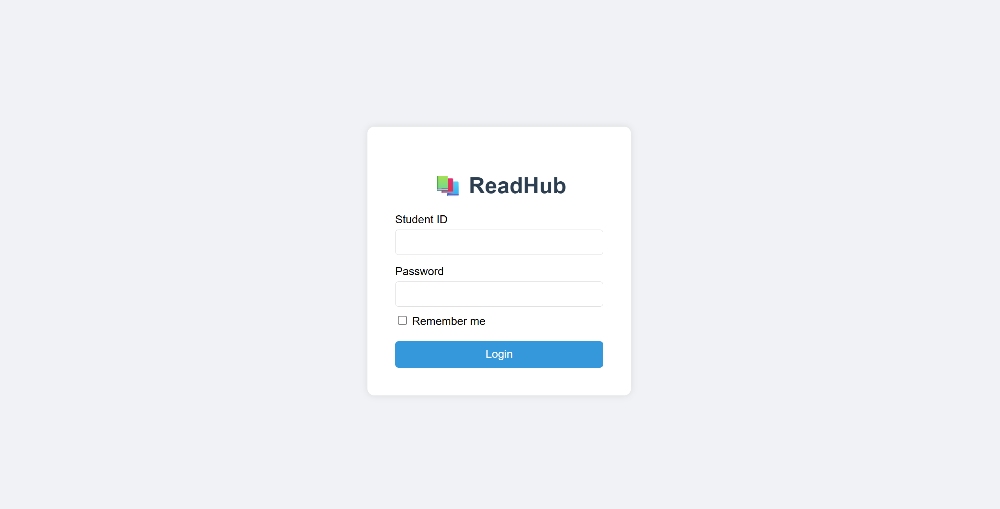
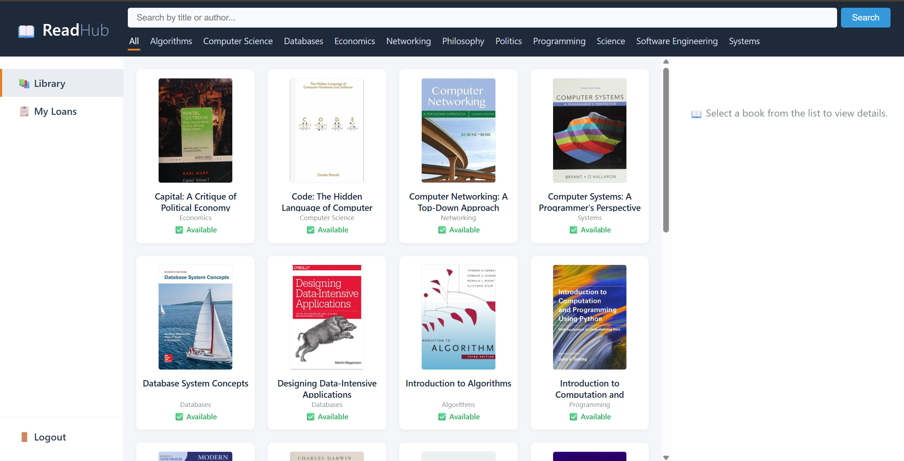
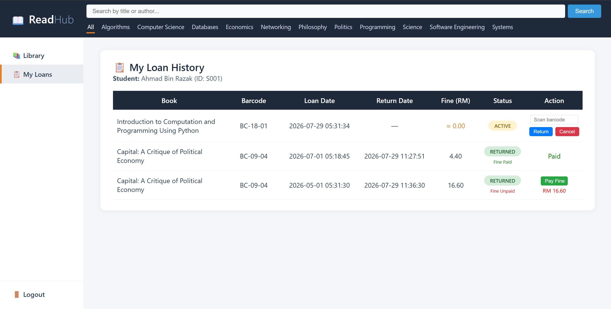

A group web development project，namely RedHub that allows students to browse available books
and manage their borrowing activities through a web interface.
PHPMySQLHTMLCSSJavaScript
Project Screenshots
An overview of the system's login, book browsing, and loan history features.

Login PageThis page allows students to log in to the system using their account details.

Library HomepageThis page displays available books and allows students to browse and select books.Book Details and AvailabilityThis page shows the selected book's details and availability status. Students can borrow the book if a copy is available.

Borrowing and Returning HistoryThis page displays the student's borrowing and returning history, including the status of each loan.
Select any screenshot to open it at a larger size.
About the Project
The Online Library Management System (OLMS) is a web-based system that helps
students manage their library borrowing activities. Students can browse books,
view book details, check book availability, borrow and return books, and cancel
borrowing records when needed. Students may also need to pay a fine if they
return books late.
The system applies the CRUD concept, which stands for Create, Read, Update, and
Delete, to support students in managing their borrowing activities through a
self-service website. The system does not include an admin dashboard.
What I Learned
I learned how to use HTML and CSS to create and design web pages.
I also used PHP to handle system functions and connect the website to the MySQL database.
In addition, I learned how to add, view, update, and manage data in the database.
I also gained a better understanding of how user sessions work to keep users logged in
and how CRUD operations are used in a web application. This project helped me understand
how the front end, back end, and database work together. As this was a group project,
I also gained experience working with other team members to develop the system.